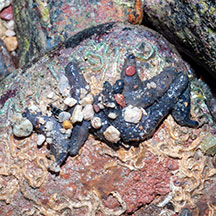
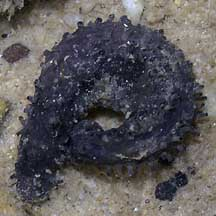
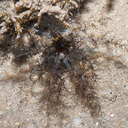

|
|
| sea cucumbers text index | photo index |
| Phylum Echinodermata > Class Holothuroidea |
| Little
African sea cucumber Afrocucumis africana* Family Sclerodactylidae updated Apr 2020 Where seen? This small purplish sea cucumber is sometimes seen under stones, particularly on our Northern shores. Usually alone, but sometimes several are seen together under one stone. According to Teo Siyang, these are widespread and common, found in shallow tropical waters from East Africa, India, Southeast Asia, China, Japan and Taiwan to Australia and the Pacific Islands. It was previously known as Pseudocucumis africanus. Features: 3-8cm long. Body cylindrical. Colour uniform purple (some lilac, others deep purple). Short tube feet in rows along the length. Tube feet are used to cling to the underside of the stone as well as to hold debris all over the body. Feeding tentacles can be larger than the body when expanded underwater, translucent white with dark branched tips. Baby sea cucumbers: From Teo Siyang, these sea cucumbers multiply by fission, i.e., by dividing into pieces. Which is why sometimes we see lots of them together under a stone! They also do undergo sexual reproduction. |
 Several seen together under one stone. Sentosa, Jul 11 |
 Tube feet In water. St. John's Island, Mar 05 |
 Feeding tentacles. Tanah Merah, Jun 12 |
*Species are difficult to positively identify without close examination.
On this website, they are grouped by external features for convenience of display
| Little African sea cucumbers on Singapore shores |
On wildsingapore
flickr
|
| Other sightings on Singapore shores |
|
Links
References
|